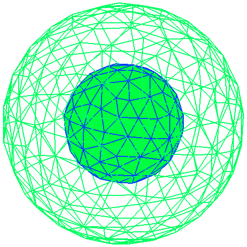

Electrostatics of a spherical dielectric shell
For our next trick, we'll consider a spherical shell of dielectric material illuminated
by a plane wave of such low frequency that we may think of the incident field as a
spatially constant DC electric field. In this case it is easy to obtain an
exact analytical solution of the scattering problem,
which we will reproduce numerically using scuff-scatter. We will take the outer and
inner radii to be Rout=1 and Rin=0.5. The files for this example
are in the share/scuff-em/examples/SphericalShell subdirectory of the scuff-em
source distribution.
To represent a spherical shell in scuff-em, we need two surface meshes, one each for
the inner and outer spherical surfaces. These are described by gmsh mesh files
Sphere_R1P0.msh and Sphere_R0P5.msh We describe the shell as an inner vacuum sphere
embedded in the outer sphere; the geometry file for this situation is
SphericalShell.scuffgeo:
OBJECT OuterSphere
MESHFILE Sphere_R1P0.msh
MATERIAL CONST_EPS_10
ENDOBJECT
OBJECT InnerSphere
MESHFILE Sphere_R0P5.msh
MATERIAL Vacuum
ENDOBJECT

We will run two separate calculations. First, we will fix the relative permittivity
of the shell at εr=10 and look at the z component of the electric field
at points on the z axis ranging from the origin (the center of the concentric spheres)
to the exterior medium. We create a file called LineOfPoints which
lists the Cartesian coordinates of each evaluation point:
0.0 0.0 0.000
0.0 0.0 0.025
0.0 0.0 0.050
...
0.0 0.0 2.000
We will pass this file to scuff-scatter using the --EPFile option:
% scuff-scatter --EPFile LineOfPoints < Args
where the Args file looks like this:
geometry SphericalShell.scuffgeo
cache SphericalShell.cache
omega 0.001
pwDirection 1.0 0.0 0.0
pwPolarization 0.0 0.0 1.0
Note that we choose a frequency low enough to ensure we are well within the electrostatic limit, and that the constant z-directed electrostatic field described in the memo above becomes a linearly polarized plane wave traveling in the x- direction.
This run of the code produces files SphericalShell.scattered and SphericalShell.total.
Plotting the 8th vs. the 3rd column of the latter file (look at the first few lines
of the file for a description of which column is which) yields plot
of the real part of Ez vs. z and
yields good agreement with the analytical calculation,
modulo some funkiness at points on or near the boundary surfaces which is to be
expected in an SIE/BEM calculation:
Next, we will vary the shell permittivity and look at the electric field at the center of the shell. In this case the analytical solution makes the interesting prediction
which we will try to verify numerically.
This calculation is slightly trickier than the last one, because scuff-scatter doesn't offer
command-line options for varying the dielectric constant of an object. One way around this is to
use the python interface to scuff-em, as discussed
on this page.
Here we will pursue a different solution involving a shell script that modifies
the .scuffgeo file for each different value of ε we want to simulate. That script
looks like this:
#!/bin/bash
cat EpsValues | while read EPS
do
# copy the .scuffgeo file with EPS_10 replaced by EPS_xx
sed "s/EPS_10/EPS_${EPS}/" SphericalShell.scuffgeo > temp.scuffgeo
# run scuff-scatter to get E-field at origin
/bin/rm -f CenterPoint.total
/bin/rm -f CenterPoint.scattered
scuff-scatter --geometry temp.scuffgeo --EPFile CenterPoint < Args
# extract the z-component of the field from the output file
EZ=`awk '{print $8}' CenterPoint.total`
echo "${EPS} ${EZ}" >> EzVsEps.dat
done
(Here EpsValues is a file containing the values of ε
that we want to simulate, and CenterPoint is a file containing
just the first line of the file LineOfPoints for the cartesian
coordinates of the origin.)
The result of the calculation looks like this: